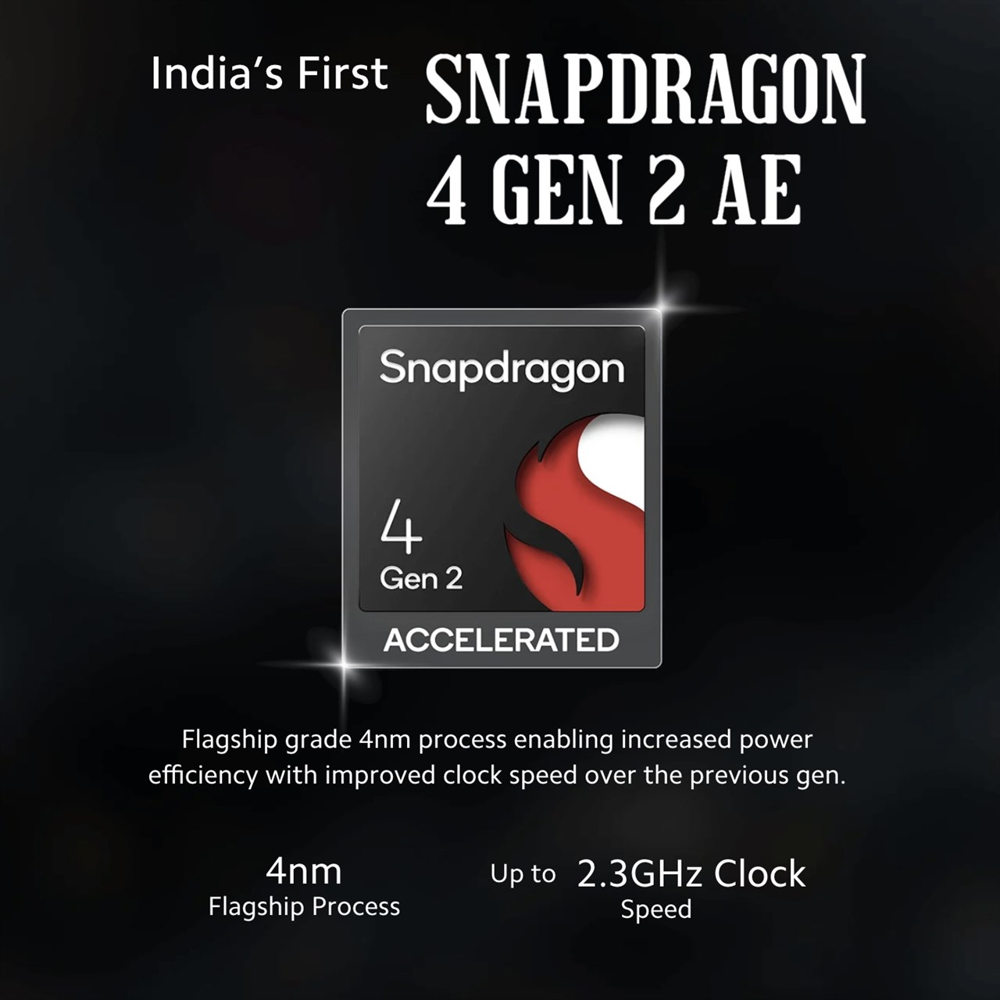
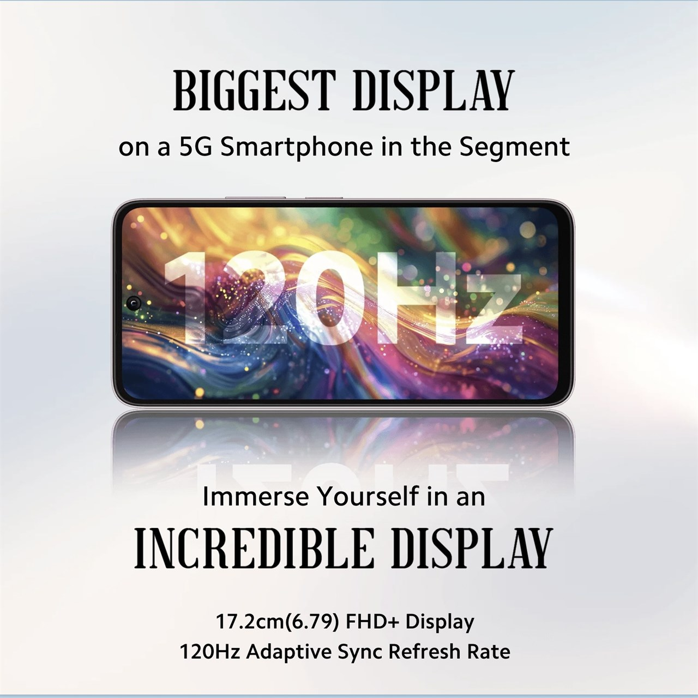
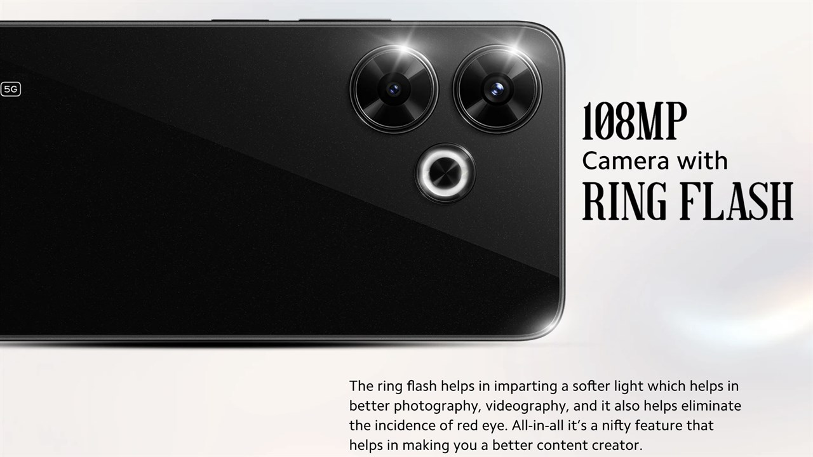
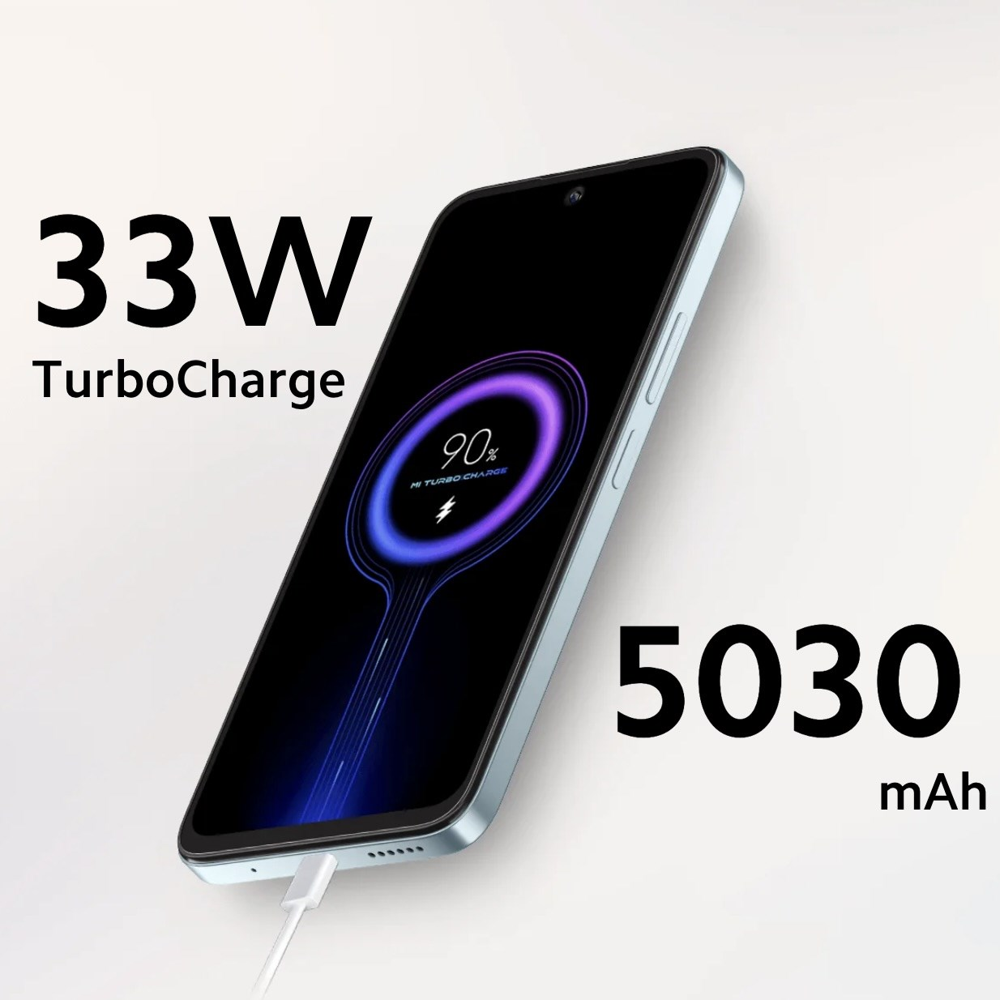

Bên trong, Redmi 13 5G được trang bị chip xử lý Snapdragon 4 Gen 2 AE (Phiên bản nâng cao), kết hợp với RAM lên đến 8 GB cùng với tối đa 8 GB RAM ảo. Thiết bị đi kèm với bộ nhớ trong 128 GB, có thể mở rộng lên đến 1 TB qua thẻ nhớ microSD.
Ở mặt trước, Redmi 13 5G có màn hình LCD Full HD+ 6,79 inch với tần số quét thích ứng 120 Hz. Màn hình có thiết kế lỗ đục lỗ và được bảo vệ bởi kính Corning Gorilla Glass 3. Máy cũng hỗ trợ Widevine L1 để xem nội dung phát trực tuyến ở chất lượng video cao nhất.
Đối với nhiếp ảnh, điện thoại có hệ thống camera kép với cảm biến chính 108 MP Samsung ISOCELL HM6 cùng với camera macro 2 MP. Ở mặt trước, máy có camera selfie 13 MP.
Máy cũng được cài sẵn giao diện HyperOS dựa trên Android 14. Xiaomi cũng hứa hẹn cập nhật hệ điều hành trong 2 năm và cập nhật bảo mật trong 4 năm. Điện thoại có pin 5030 mAh, hỗ trợ sạc nhanh 33 W. Về kết nối, điện thoại hỗ trợ 5G SA/NSA, 4G VoLTE kép, Wi-Fi 6, Bluetooth 5.1, GPS và cổng USB Type-C.
